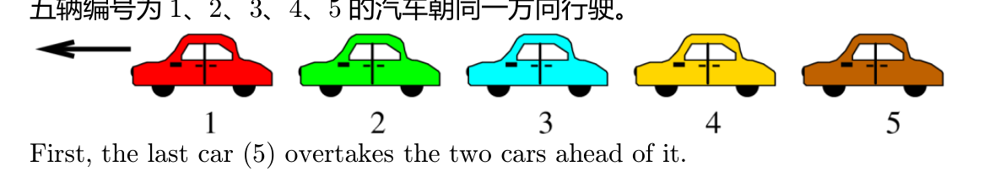

五辆车同向行驶。先是最后一辆超前两辆，再是倒数第二超前两辆，最后中间车超前两辆。现在顺序是？
Five cars. Last overtakes two ahead; then second-last overtakes two; then middle overtakes two. Final order?

左边是车队前方。点「下一步」模拟三次超车。
Left = front of the line. Tap Next for each overtake.